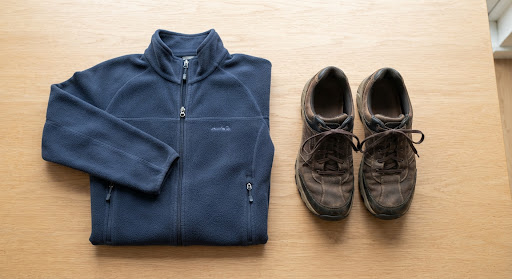

fmd_bad
Active Search Corridor
Dongcheng North Gate • Radius 1.8km active tracking
Urgent Community Search: Grandpa Lin (82 yo) last seen near Dongcheng
Grandpa Lin left home around 10:30 AM wearing a navy fleece jacket and brown walking shoes. SafeStep shoes last pinged near North Gate. Please report sightings immediately!
person_search
Physical Traits: 168cm, silver cropped hair, wireframe reading glasses.
footprint
Equipment: SafeStep IoT Smart Soles (amber sensor tag #409).
Portrait • 82 yo

Attire Sample